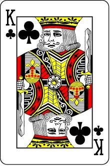
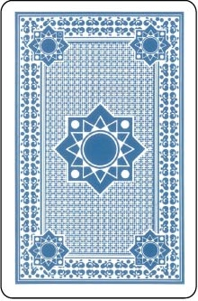

CSS3 practice: Card Flip
By Andy Lee 11.2.2014
(Doesn't work in IE)
===== Put the mouse on the card =====


=====
Image source:
http://www.consolesandgadgets.co.uk/catalog/images/Marked%20Poker%20Cards-3.jpg
CSS reference:
http://css3.bradshawenterprises.com/flip/